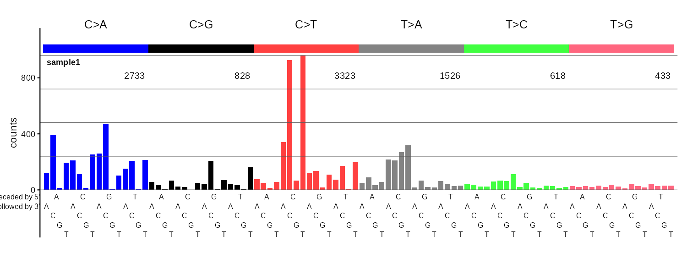
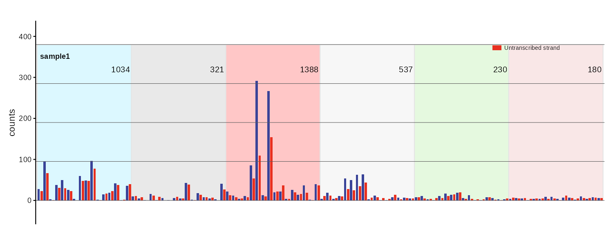
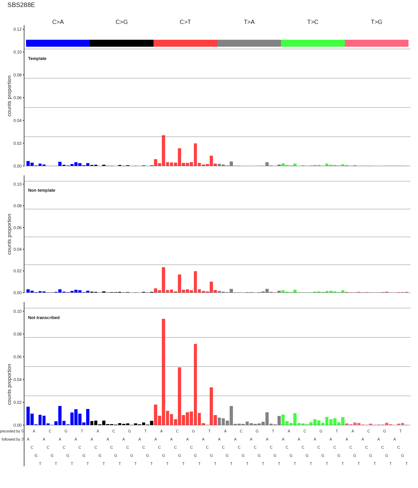
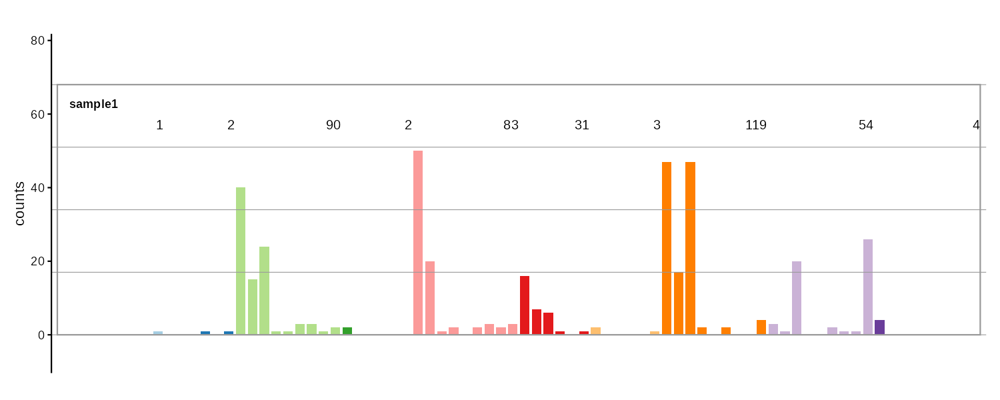
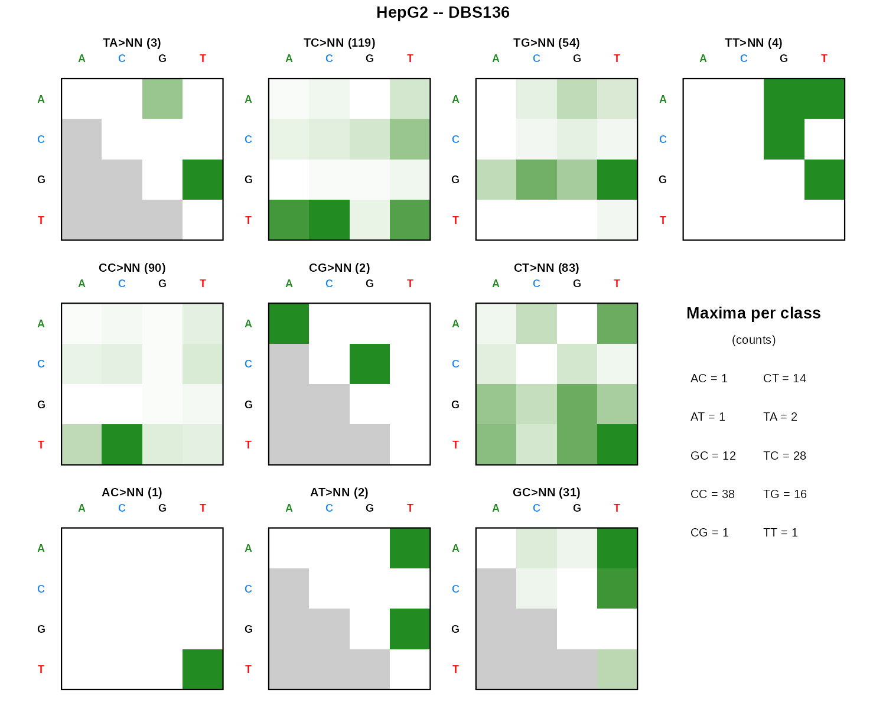

Publication-quality plots for mutational signatures and mutational spectra. Supports SBS, DBS, and indel catalogs across 10 classification systems with bar charts, strand-bias plots, and heatmaps.
Installation
# Install from GitHub
install.packages("remotes") # if needed
remotes::install_github("steverozen/mSigPlot")Quick start
Every plot function accepts a numeric vector, single-column data.frame, matrix, tibble, or data.table. The easiest entry point is plot_guess(), which auto-detects the catalog type by row count:
library(mSigPlot)
# Auto-detect and plot
plot_guess(my_catalog)
# Or call a specific function
plot_SBS96(sbs96_catalog, plot_title = "Sample 1")
# Export multiple samples to a multi-page PDF (5 per page)
plot_guess_pdf(multi_sample_catalog, "output.pdf")Supported catalog types
| Channels | Function | Mutation type | Plot style |
|---|---|---|---|
| 96 | plot_SBS96() |
SBS (single-base substitutions) in trinucleotide context | Bar chart |
| 192 | plot_SBS192() |
SBS in trinucleotide context with transcription strand | Paired bar chart |
| 12 | plot_SBS12() |
SBS strand bias (from 192-row input) | Paired bar chart |
| 1536 | plot_SBS1536() |
SBS in pentanucleotide context | 2x3 heatmap grid |
| 78 | plot_DBS78() |
DBS (doublet base substitution) | Bar chart |
| 136 | plot_DBS136() |
DBS dinucleotide classes | 10-panel heatmap |
| 144 | plot_DBS144() |
DBS with transcription strand | Paired bar chart |
| 83 | plot_ID83() |
Indel (COSMIC 83 indel-type classification) | Bar chart |
| 89 | plot_ID89() |
Indel (89 indel-type classification) | Bar chart |
| 166 | plot_ID166() |
Indel 83-type classification, genic/intergenic | Paired bar chart |
| 476 | plot_ID476() |
Indel 476-type classification | Bar chart + peak labels |
| 288 | plot_SBS288() |
SBS in trinucleotide context, by template (transcribed), non-template, and intergenic regions | 3-panel stacked bar chart |
Every plot function except plot_SBS288 has a corresponding _pdf() variant (e.g., plot_SBS96_pdf()) that writes multi-sample PDFs with 5 plots per page.
Gallery
SBS96
96-channel single base substitution profile with 6 color-coded mutation classes (C>A, C>G, C>T, T>A, T>C, T>G).

SBS192
Transcription strand-aware SBS profile. Bars are paired: transcribed (blue) and untranscribed (red) for each trinucleotide context. Intergenic regions not plotted.

SBS288
288-channel SBS profile split by transcription strand: template (transcribed), non-template (untranscribed), and not-transcribed (intergenic). Displayed as three stacked SBS96 panels with a shared y-axis.

DBS78
78-channel DBS (doublet base substitution) profile across 10 dinucleotide reference classes.

DBS136
DBS shown as 10 small 4x4 heatmaps, one per dinucleotide class, with a maxima-per-class summary.

Common parameters
All plot functions share these parameters:
| Parameter | Description |
|---|---|
catalog |
Numeric vector, data.frame, matrix, tibble, or data.table |
plot_title |
Title above the plot (defaults to column name) |
base_size |
Base font size in points (default 11) |
show_counts |
TRUE/FALSE/NULL (auto-detect) for per-class count labels |
show_axis_text_x |
Show or hide x-axis tick labels |
show_axis_text_y |
Show or hide y-axis tick labels |
show_axis_title_x |
Show or hide the x-axis title |
show_axis_title_y |
Show or hide the y-axis title |
*_cex |
Multipliers for individual text elements relative to base_size
|
Most bar chart functions also accept ylim (y-axis limits), grid (grid lines), and upper (colored class labels above bars). See ?plot_SBS96 for the full parameter list.
Your input must have the expected row order
If your catalog has row names matching the canonical mutation type labels, mSigPlot validates and reorders them automatically. If row names are absent (unnamed vector or sequential integer names or data from a data.table or tibble), the data is assumed to be in canonical order. If your rows are in an unexpected order you will got nonsensical plots. Use catalog_row_order() to see the expected order for any catalog type:
head(catalog_row_order()$SBS96)
#> [1] "ACAA" "ACCA" "ACGA" "ACTA" "CCAA" "CCCA"